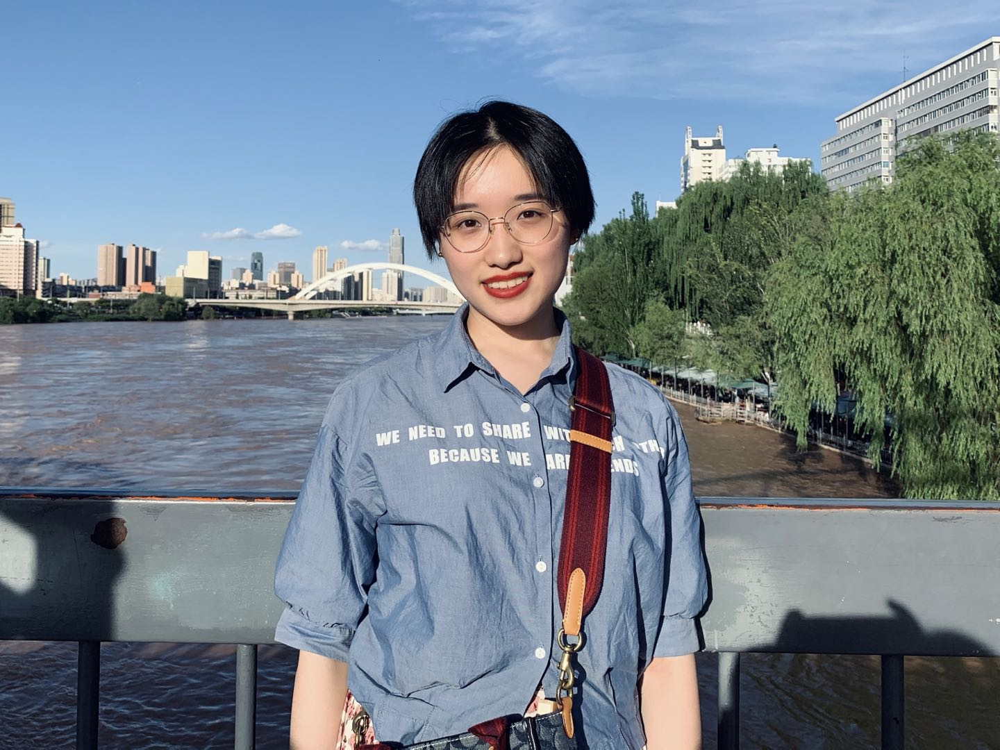

Education / 教育背景
- School of Electronics Engineering and Computer Science (信息科学技术学院)
Peking University (北京大学) - Xi'an Tie Yi High School (西安市铁一中学)
Contacts / 联系方式
- E-mail: phoenixrain@pku.edu.cn
- GitHub: phoenixrain-pku
Research / 科研
- I am advised by Zhengfeng Ji (季铮锋).
- I am interested in Quantum Computing, Networking, Sketches and so on...
Statement / 自述
Experience / 履历
2000年出生在西安城南，2006年上小学，除了写作与钢琴没有其他特长，最初学习不太好，度过了默默无闻、毫不起眼的5年。六年级时学习成绩逐渐显山露水，性格也逐渐开朗，结交了一些朋友，并意识到收获朋友的方法是：开诚布公地把自己的作业给大家抄。
2012年进入西安市铁一中学，身在重点班，最初学习不太好，总是很沮丧，也没有什么朋友。初二开始学习成绩逐渐显山露水，性格也逐渐开朗，结交了一些朋友，并意识到收获朋友的方法是：学习好，且待人真诚友善。
2015年参加中考，但实际上已保送至西安市铁一中学高中部。高二进入实验班，并学习数学竞赛，在暑假的一场考试中超常发挥，得到北大数院夏令营的名额。但最终无功而返，回去学习文化课，把理想设定为北大数院。
2018年参加高考，被北京大学计算机系录取。2018年12月起开始尝试科研工作，研究方向为网络测量。曾一度觉得这是自己喜欢的方向，但于2020年9月不得不重新探索研究方向，兜兜转转后决定研究量子计算。
2021年保研到清华大学计算机系，将于2022年开始在清华大学计算机系进行博士阶段的学习与研究。
Music / 音乐
自2006年开始学习钢琴，6岁的生日礼物是一台8千多块钱的枣红色钢琴，使用至2021年8月23日，被一架让我“接下来十年都不需要生日礼物了”的新钢琴所取代。8岁以前曾拥有过成为钢琴家的幻想，12岁考完10级，便停止在钢琴演奏上的求学之路。
童年时代加入小学合唱团，由于乐器演奏基础而拥有较强的音准水平，因此被分往低声部。11岁幡然醒悟，决定不再屈身做音准的奴隶，恰逢合唱团大改编制，决心加入高声部。却阴差阳错被分去跳舞，小学的合唱生涯在六一儿童节的舞台上为合唱团伴舞扮演小白鹅而结束。
少年时代本想加入初中校合唱团，初一刚入学的一个黄昏在面试现场唱音阶，被老师一眼相中并获得入团资格。但是合唱团排练时间与学校的数学培优课时间冲突，在数学老师的劝说下还是屈身做了学习的奴隶。接下来6年，除了要参加艺术节的合唱比赛时在班里担任主排，再与歌唱无缘。
初中加入了学校的“三角钢琴演奏小组”，课间在一楼大厅的三角钢琴上演奏一些小曲子。上高中后学校不再有这样的组织，但楼道里仍有三角钢琴，仍旧会课间去弹。与一些狂砸低音、痛苦地演奏贝多芬来发泄学习压力的同学相比，我喜欢演奏肖邦的圆舞曲，似乎有些遗世独立。
从小到大一直在听音乐，刚刚进入初中时还喜欢着古典乐，尤其喜欢肖邦；后来开始喜欢摇滚乐，疯狂地听了许多，最喜欢的乐队也变了很多次。高二之后又开始重新听古典乐，最喜欢的作曲家也总无定论——总演奏肖邦却不愿承认喜欢，自称厌恶法派却总在偷偷听德彪西和拉威尔，仰慕贝多芬却从不愿试着演奏，总而言之，似乎对所有作曲家都有复杂的情绪与看法。若一定要推选出一位最喜欢的，恐怕只能是柴可夫斯基了。
上大学后由于自以为厌倦了钢琴，又想要重拾歌唱的爱好，遂对钢琴社置之不理，积极地加入校合唱团二团，终于得偿所愿地唱了女高音。半年后由于学业繁忙而退出，再半年后二团也因历史的进程被迫解散。后又加入信科129教唱组，年复一年地负责女高声部教唱工作。结果大三时还是因为喜欢的男同学又加入了钢琴社。
2021年再次幡然醒悟，意识到自己早已厌倦了钢琴和歌唱，遂开始学习小提琴。重新做回音准的奴隶，但乐此不疲。
Literature / 文学
5岁已拥有简单的语言组织能力，识字后写下一些论述文，通过小孩子的胡言乱语，探讨最深层的哲学问题：什么是爱？什么是快乐？平均篇幅在100字左右。在一个互联网尚未得到充分发展的年代，母亲不辞辛苦地将我所写的文章发到博客，引来一群网友的赞叹，大家都不敢相信这是出于还没上小学的孩子。也许那时母亲就朦胧地意识到了我在遣词造句上的天赋，我的写作生涯也就此开始。
7岁时得到母亲赠送的一个便签本，遂在其上开始毫无逻辑地写小诗和编故事，得到长辈的认可，以及姥爷的“小说写得不错”题词一句。随着母亲赠送了更多的便签本，也创作了更多毫无逻辑的文章，并在便签本里夹满了从学校门口的草丛中找来的四叶草——我在童年时代厌恶练习钢琴、学习数学，却沉迷读书、写作与寻找四叶草。
小学时喜欢在写作业时偷偷看书，每当母亲经过房间，我会惊慌失措地把书藏到桌子下面。最后终于被抓住一次，却未得到任何批评，便开始肆无忌惮、变本加厉地阅读，迄今都保持着这样的状态。童年时代的读书启蒙为格林童话、儿童文学与哈利波特，而后开始接触严肃文学，印象最深的小说为《老人与海》与《麦田里的守望者》。对于一个10岁的小孩子而言，这两部作品实在让人感到震撼：前者给我的启示是“这么长的故事竟然可以只有一个主角”，后者给我的启示是“每句都有脏话的文章也可以被称为文学”。
8岁语文课开始学习写作文，写出的第一篇作文就受到老师们的大力表扬，官方的溢美之词让我第一次意识到了自己在写作上似乎是有点天赋的。而从此之后近10年的学生时代，都陷入了“写文章-被当成范文-当众朗读”的死循环之中。由于在童年时代受到太多“文采斐然”与“才华横溢”一类的褒赞，便自鸣得意地飘飘然起来，自8岁起放弃了成为钢琴家的理想，将理想重新设定为当作家，并开始锲而不舍的写作练习，9岁完成第一部毫无逻辑的长篇小说创作，名为《碧依记》；11岁至13岁完成第二部毫无逻辑的长篇小说创作，名为《散落天涯》。这两部作品曾在班上风靡一时，被同学们争相传阅，但如今已成为我不愿提及的羞耻回忆。
父母在单位与同事极少谈及我的学习状况，即使旁人问起，也会谦虚应答，当时的我只有“写作”这唯一的才能被大人们口口相传。11岁考中学时，父母单位的同事纷纷说道：“您家孩子如此会写文章，以后必要学文科，应当去高新一中。”高新一中是西安的知名中学之一，位于西安城西南，只可惜我不争气地没考上——实际上，连考试资格都没拿到。多年以后，当我考入北京大学，消息传至父母单位，仍有同事贺喜道：“您家孩子文章写得那么好，肯定学了文科，上北大是最好的。”
13岁在语文考试中编出一篇矫揉造作的抒情文，被大张旗鼓地褒赞一番后投稿登报；15岁西安友谊路的梧桐树被砍，悲伤之余写下一篇为赋新词强说愁的抒情文，随手投给某个作文比赛，竟拿了一等奖，奖状发到我手中时才知道此比赛名曰“冰心作文大赛”，遂沮丧至极，因为从小学起我就极其讨厌这位作家。16岁开始囿于高考压力写了两年议论文，这辈子都不想再写了。
18岁重新审视自己的文学道路，幡然醒悟，意识到自己过去的创作都只是情绪的无端宣泄，遂开始认真撰文，战战兢兢，在恰如其分的理性中仍保持着极端的浪漫主义与抒情至死。写了一些诗歌与短篇、中篇小说，发誓应有艺术自觉，不再进行长篇的创作尝试。现在的目标就是脚踏实地写小说，若能在学生时代有所发表，实在是再好不过了。
无法判断自己更喜欢学术还是艺术——虽然说我常常说自己“选择了学术道路，便再无资格为艺术而死”，但若问我为何而生，我觉得应当是艺术。毕竟从小到大都没搞清过自己到底想在学术上的具体哪个分支进行更深入的研究工作，但对艺术的热爱是与生俱来，且将生死与共的。曾有一位男同学以文学交流的名义邀请我吃饭，期间试探地问起我：“你为什么要坚持写作？支撑你一直写下去的动力或者理念是什么？”我竟一时语塞，因为自己从未思考过“为什么要写作”。当时我只是淡漠地答复道：“你问我这样的问题，就像问我为什么要每天坚持吃饭一样。”但这个问题的确惊醒了我，让我意识到写作已彻底成为我生命的一部分，我没有理由停止，也无法停止。我在音乐演奏上并没有如此的天赋与直觉，但如今我也无法离开音乐。我想，艺术可能是我真正的天职——即使我在少年时代的人生选择上不可逆转地走上了学术道路。因此便任由这二者在自己的生活中交织甚至肆虐，也不失为一件好事。